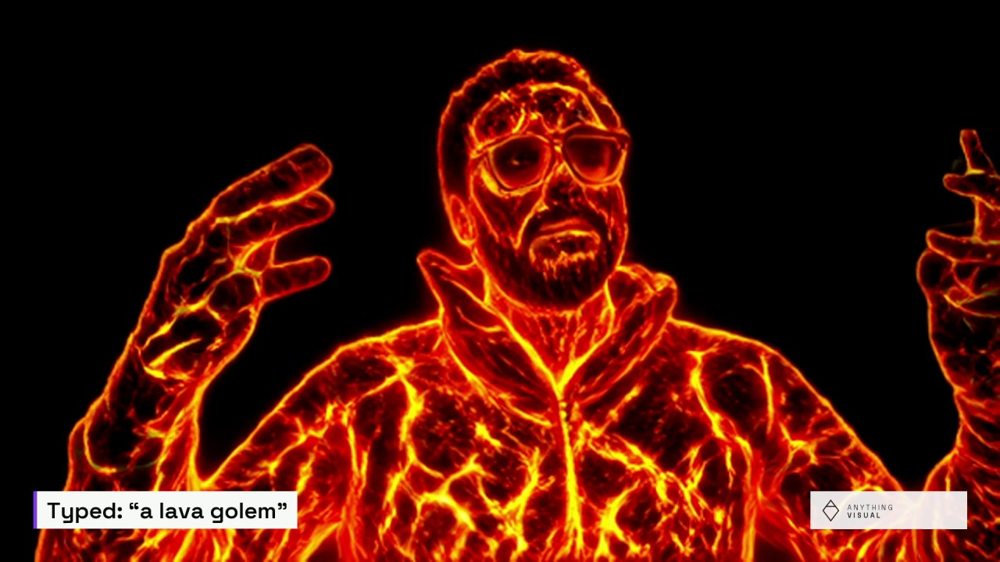
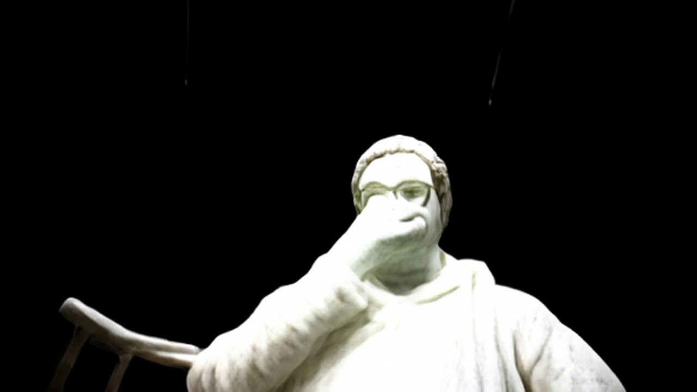
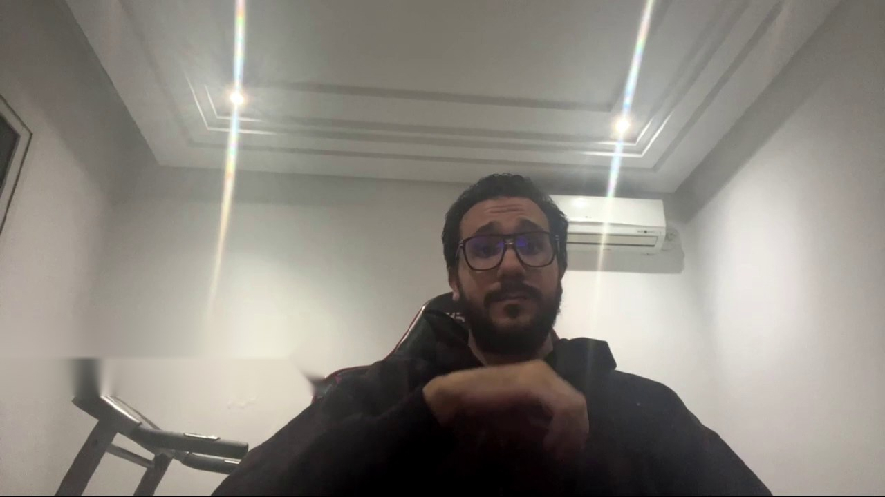
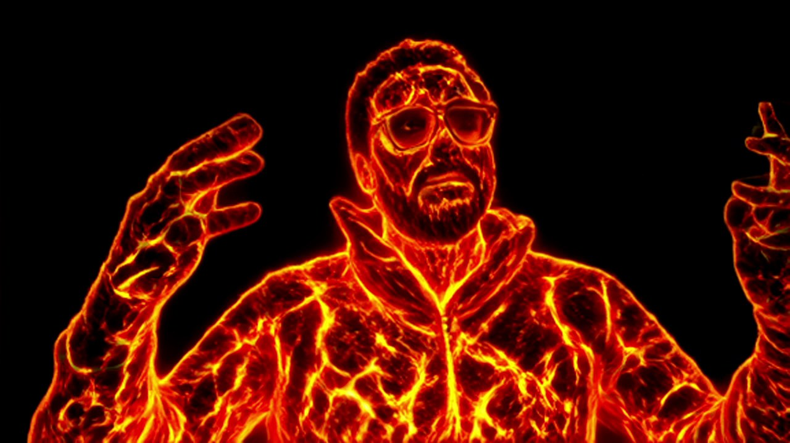
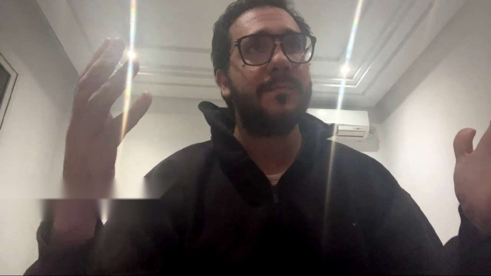
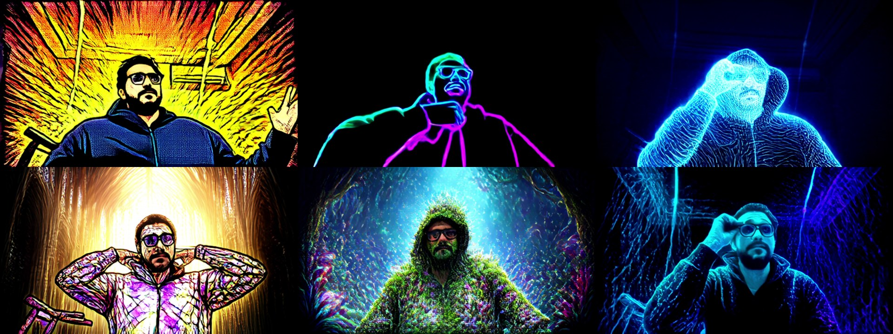
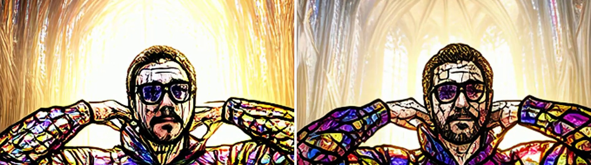

← Portfolio Own tool · real-time AI visuals · 2026
Live AI
A live visual engine for stages and events. A camera films the performer and an open image model restyles every frame in real time: 1280×720 at 60 fps on a single RTX 5070 Ti. Seven style presets switch instantly, and a typed prompt is on screen about 3.5 seconds later, without the video ever stopping.
It runs offline on one PC and plugs into a show like any video source: Spout output to OBS, Resolume or TouchDesigner, controlled from the keyboard, OSC or a MIDI controller. Built on FLUX.2 klein 4B, RIFE frame interpolation and a tiny VAE. Looking for stages, festivals and brand activations to test it live.
Role: Concept and direction, AI-assisted build
Stack: FLUX.2 klein 4B · FP8 + torch.compile · RIFE 4.7 · Spout, OSC, MIDI
Output: 1280×720 · 60 fps · one GPU, offline
Status: Working engine, open to stage tests



BeforeAfter

BeforeAfter
